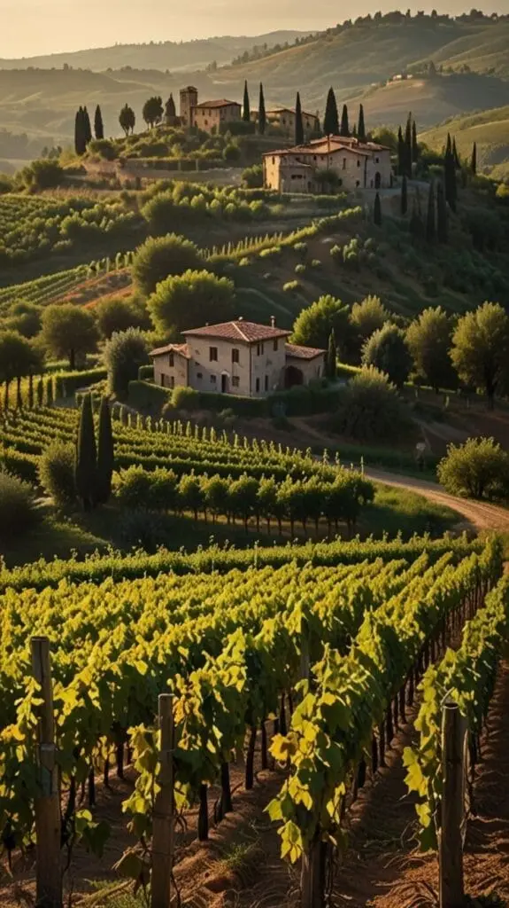
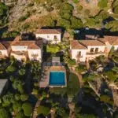
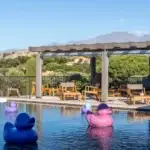
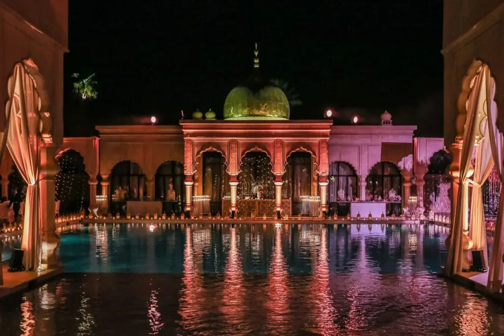
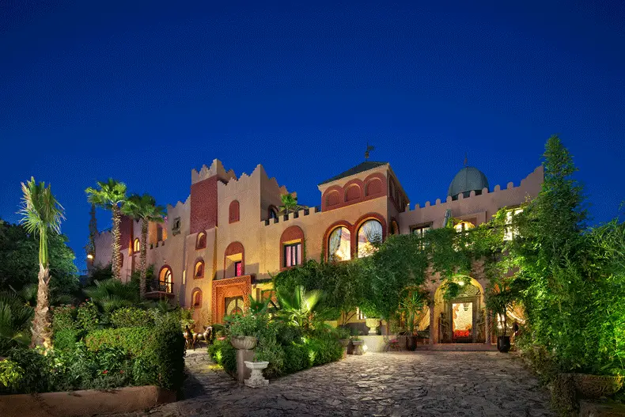
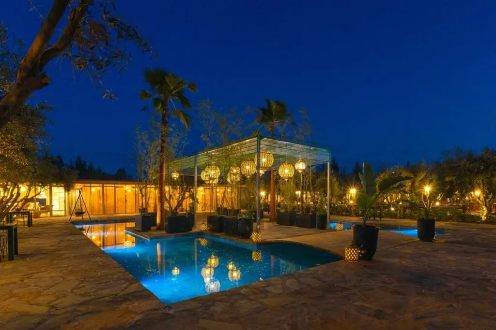
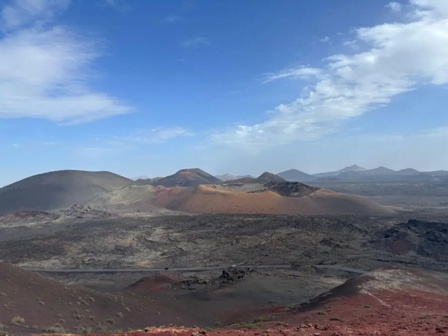
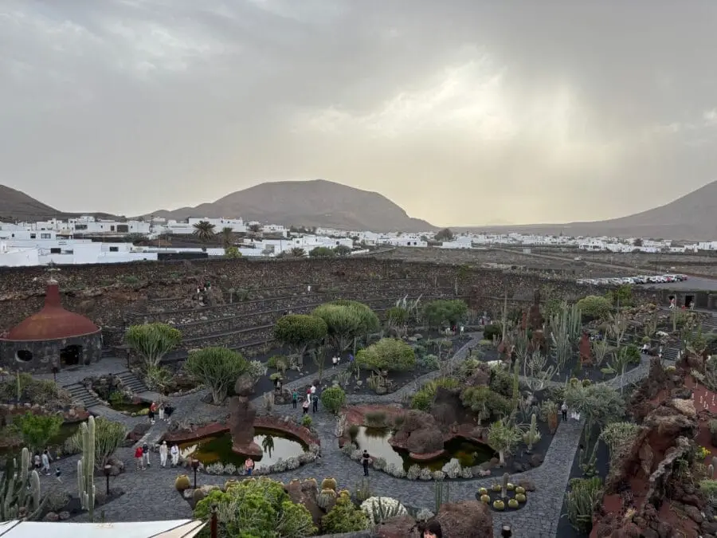

Organiser un mariage à l’étranger, c’est choisir un cadre enchanteur et romantique pour célébrer votre amour. Ces destinations offrent des paysages variés, des traditions culturelles riches et des services de haute qualité, faisant de chaque lieu un choix idéal pour une célébration mémorable. Que vous rêviez d’un mariage au milieu des vignobles italiens, sur une île grecque pittoresque, dans un palais marocain exotique, sur une plage corse isolée ou au cœur des paysages volcaniques, ces destinations ont tout pour rendre votre grand jour inoubliable. Explorons ensemble ces cinq destinations de rêve pour un mariage inoubliable.
Pourquoi faire un mariage à l'étranger ?
Un mariage à l’étranger offre une multitude d’opportunités et de défis uniques. Les paysages variés, les traditions culturelles riches et les services de haute qualité font de ces destinations des choix idéaux pour une célébration mémorable. Cependant, il est important de prendre en compte certains défis, tels que la logistique de voyage et les différences culturelles.
Toscane, Italie : Un Mariage Romantique au Cœur des Vignobles

La Toscane est probablement l’une des régions les plus romantiques. Avec ses collines et ses vignobles, c’est un choix charmant. vous pouvez dire “oui” dans un vieux château ou au milieu d’un vignoble. La nourriture italienne, les bons vins, c’est le rêve !
Les villes comme Florence et Sienne sont pleines d’histoire et de beauté. Vous pourrez faire des excursions pour découvrir le passé fascinant de l’Italie. Sans oublier les magnifiques paysages de Chianti, parfaits pour des photos de mariage. Vous et vos invités allez adorer.
Lieux à proposer:
Château de Vincigliata
Villa Vignamaggio
Santorin, Grèce : Un Décor Eblouissant pour un Mariage Elégant
Passons maintenant à Santorin. Vous savez, ce lieu magnifique avec des maisons blanches aux toits bleus. Les couchers de soleil ici sont à couper le souffle. Si vous voulez un mariage chic et beau, c’est là qu’il faut aller. Les églises blanches et les terrasses offrent de superbes photos.
Et ce n’est pas tout ! Santorin a aussi une histoire fascinante. Vous pouvez faire des visites d’anciens sites, goûter des vins locaux ou dîner dans de charmantes tavernes. Sans oublier les plages de sable noir et rouge qui sont juste à côté. En vous promenant dans les ruelles, vous tomberez amoureux de l’endroit encore plus.
Lieux à proposer:
Santo Winery
Canaves Oia Hotel

Maroc: Un Mariage Exotique et Envoûtant
Le Maroc est une destination exotique et envoûtante pour un mariage. Avec ses palais somptueux, ses jardins luxuriants et ses paysages désertiques, il offre un cadre unique et mémorable. Imaginez-vous échanger vos vœux dans un Riad traditionnel ou au milieu des dunes du Sahara, créant ainsi des souvenirs inoubliables.
Les villes comme Marrakech et Fès sont riches en histoire et en culture. Vous pouvez organiser votre cérémonie dans des lieux emblématiques tels que le Palais Namaskar, La Mamounia ou la Kasbah Tamadot. Les invités apprécieront également les souks colorés, les hammams traditionnels et la délicieuse cuisine marocaine.
Le Maroc offre également une variété d’activités pour les couples et leurs invités, telles que des balades à dos de chameau, des excursions dans les montagnes de l’Atlas et des visites des médinas historiques. Les hébergements vont des riads authentiques aux hôtels de luxe, offrant une expérience unique et romantique.
Corse, France: Un Mariage Romantique sur l’Île de Beauté

La Corse est une île magnifique avec des plages de sable fin, des montagnes escarpées et des villages pittoresques. Un mariage en Corse, c’est l’assurance d’une ambiance romantique et authentique. Vous pouvez organiser votre cérémonie sur une plage isolée, avec le bruit des vagues en arrière-plan, ou dans un village de montagne, entouré de paysages à couper le souffle.
Les invités apprécieront la cuisine locale, riche en saveurs méditerranéennes, et les vins corses réputés. La Corse offre également une variété d’activités, telles que des randonnées dans les montagnes, des excursions en bateau pour explorer les criques cachées, et des visites des villages historiques. Les hébergements vont des hôtels de luxe aux charmantes maisons d’hôtes, offrant une expérience unique et mémorable.
Lieux à proposer :
Hôtel La Villa
Château de la Punta
Lanzarote, Espagne : Un Mariage Unique au Cœur des Paysages Volcaniques
Lanzarote, l’une des îles Canaries, est une destination unique pour un mariage. Connue pour ses paysages volcaniques spectaculaires, ses plages de sable noir et ses eaux cristallines, Lanzarote offre un cadre extraordinaire pour une cérémonie de mariage inoubliable. Imaginez-vous échanger vos vœux au milieu des formations rocheuses volcaniques, avec l’océan Atlantique en toile de fond.
Lanzarote est également célèbre pour ses œuvres d’art et d’architecture, notamment celles de César Manrique, qui a su intégrer harmonieusement la nature et la culture. Vous pouvez organiser votre mariage dans des lieux emblématiques tels que les Jameos del Agua ou le Mirador del Río, offrant des vues panoramiques à couper le souffle.
Les activités ne manquent pas à Lanzarote. Les couples et leurs invités peuvent explorer les parcs nationaux, faire des randonnées dans les paysages volcaniques, visiter les vignobles locaux et déguster des vins uniques. Les plages de Lanzarote, comme Playa Blanca et Papagayo, sont parfaites pour se détendre et profiter du soleil.
Lieux à proposer:
Parc National de Timanfaya
Jameos del Agua

Avis clients
“Nous avons eu la chance de travailler avec Alexandra Ambert de Lovely Day Event pour notre mariage, et nous ne pourrions pas être plus heureux de notre choix. Dès le premier contact, Alexandra a su comprendre nos attentes et nos envies. Elle a été d’une écoute attentive et a su nous guider tout au long des préparatifs. Le jour J, tout était parfait, de la décoration à la coordination des prestataires. Nos invités ont été émerveillés par la beauté et l’organisation de notre mariage. Merci, Alexandra, pour avoir rendu ce jour si spécial et inoubliable !”
Charlotte et Bastien
Les opportunités d’un mariage à l'étranger
Cadres naturels époustouflants : Les paysages variés, allant des vignobles italiens aux plages grecques, offrent des décors magnifiques pour des photos de mariage inoubliables.
Services de haute qualité : Les destinations à l’étranger sont réputées pour leurs services de mariage de haute qualité, incluant des organisateurs de mariage expérimentés, des lieux de réception élégants et des options de restauration raffinées.
Expériences culturelles uniques : Chaque destination offre une richesse culturelle unique, permettant aux couples et à leurs invités de découvrir de nouvelles traditions et de vivre des expériences mémorables.
Les défis pour un mariage à l’étranger
Logistique de voyage : Organiser un mariage à l’étranger peut être complexe en termes de logistique, incluant la coordination des voyages pour les invités et le transport des fournitures nécessaires.
Différences culturelles : Il est important de se familiariser avec les coutumes locales et les lois en matière de mariage pour éviter tout malentendu ou complication.
Coûts potentiellement élevés : Les mariages dans des destinations occidentales peuvent être coûteux, en raison des frais de voyage, d’hébergement et des services de haute qualité.
Mon avis en tant que professionnelle
“En tant qu’organisatrice de mariage et designer de Lovely Day Event, j’apporte une touche unique à chaque mariage que j’organise. Ma passion pour l’événementiel et mon souci du détail font de moi une professionnelle exceptionnelle. Je suis non seulement une organisatrice talentueuse, mais aussi une créatrice d’expériences inoubliables. Je sais transformer les rêves des couples en réalité, en prenant en charge chaque aspect de leur mariage, de la planification à la coordination le jour J. Travailler avec moi, c’est s’assurer d’un mariage sans stress et parfaitement orchestré.”
Alexandra Ambert
Conseils pour Organiser un Mariage à l'Étranger
Avant de plonger dans cette belle aventure, voici quelques conseils pour vous aider :
Planifiez à l’avance : Commencez à organiser votre mariage au moins un an à l’avance pour vous assurer que tous les détails sont pris en compte.
Informez vos invités : Donnez à vos invités suffisamment de temps pour planifier leur voyage et réservez des hébergements à l’avance.
Respectez les coutumes locales : Familiarisez vous avec les traditions et les lois locales pour éviter tout malentendu.
Préparez les documents nécessaires : Assurez-vous d’avoir tous les documents requis pour que votre mariage soit légalement reconnu dans votre pays d’origine.
Prévoyez un budget : Établissez un budget réaliste en tenant compte des coûts de voyage, d’hébergement, de la cérémonie et de la réception.
Visitez la destination à l’avance : Si possible, faites un voyage de reconnaissance pour visiter les lieux de mariage potentiels et rencontrer les fournisseurs locaux.
Soyez flexible : Gardez à l’esprit que certaines choses peuvent ne pas se dérouler comme prévu, alors soyez prêt à vous adapter et à profiter de chaque moment.
En bref...
Organiser un mariage à l’étranger, c’est bien plus qu’une simple cérémonie; c’est une aventure inoubliable qui vous permet de célébrer votre amour dans des lieux extraordinaires. Que vous rêviez d’un mariage romantique au cœur des vignobles toscans, d’une cérémonie élégante sur les falaises de Santorin, d’une fête exotique dans un palais marocain, d’une union intime sur une plage corse ou d’un mariage unique au milieu des paysages volcaniques de Lanzarote, chaque destination offre une expérience magique et mémorable.
En choisissant de vous marier à l’étranger, vous offrez à vous-même et à vos invités l’opportunité de découvrir de nouvelles cultures, de savourer des cuisines délicieuses et de créer des souvenirs qui dureront toute une vie, des paysages époustouflants.
Alors, pourquoi ne pas transformer votre rêve en réalité et dire “oui” dans l’une de ces destinations de rêve ? En suivant nos conseils de planification et en choisissant l’un de ces lieux enchanteurs, vous pouvez être sûr que votre mariage sera un événement inoubliable pour vous et vos invités. Faites de votre grand jour une aventure extraordinaire et créez des souvenirs qui resteront gravés dans vos cœurs pour toujours.














Lovely Day Event c'est plusieurs types de prestations
L'organisation de mariage
Je vais intervenir sur toutes les étapes de vos préparatifs et vous guider dans vos choix. Je suis force de proposition pour que votre mariage ne ressemble qu’à vous.
Décoration de mariage
Créative et passionnée, je suis certifiée Wedding Designer et je conçois une ambiance scénographique qui correspond au thème de votre mariage.
Coordination le jour J
Je serai le chef d’orchestre pour gérer les différents prestataires, la mise en place de votre décoration et le déroulement de cette belle journée.